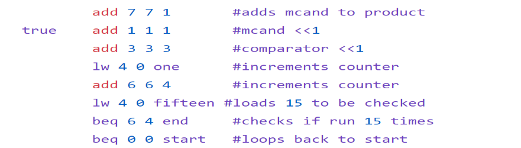

Assembler - Computer Architecture
During the class Computer Architecture at the University of St. Thomas, I collaborated with a classmate to write a program that would assemble assembly code into binary machine code using C as a language. I got to learn about how instructions are stored and interpreted in the computer which gave me perspective on how data is stored and read by the machine at the lowest level of architecture.
Github RepoHow to run
Example input
With one input file to print to screen
./asm -i {input.as}
With one input file to write to an output file
./asm -i {input.as} -o {output.mc}
./asm -i {input.as} > {output.mc}
Dependent files
assembler.c - code that converts assembly to machine code
Makefile - for compiling assembler.c with glibrary and making an executable
Test files
**All errors throw a message and exit unless marked otherwise**
1. bad_opcodes.asm - tests faulty commands
2. duplicate_labels.asm - tests duplicate labels
3. empty.asm - tests an empty file. **produces no errors and no output**
4. every_command.asm - tests every valid command **produces no errors**
5. label_same_as_command.asm - tests for labels with the same name as a command
6. label_starts_with_number.asm - tests for invalid labels starting with a non char
7. label_too_long.asm - tests for long labels
8. offset_too_big.asm - tests for too large non label offsets
9. register_out_of_range.asm - tests for register inputs within 0-7
10. undefined_labels.asm - tests the us of an undefined label
11. program.asm - default assembly program provided by the assignment